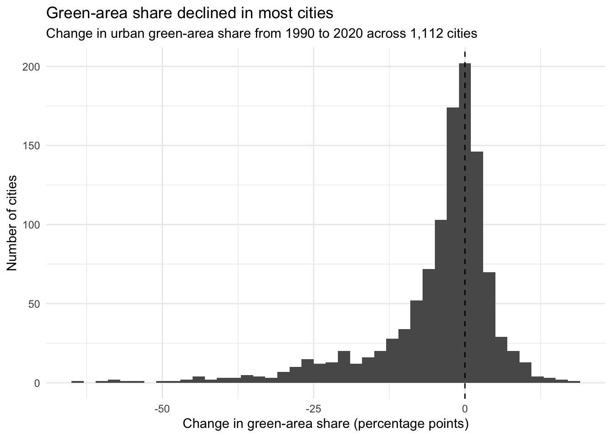
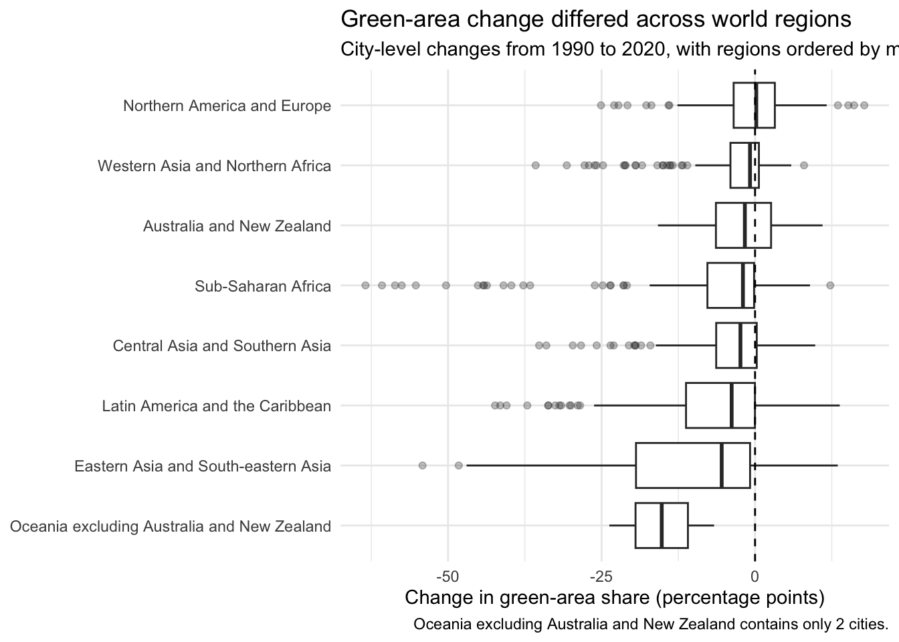
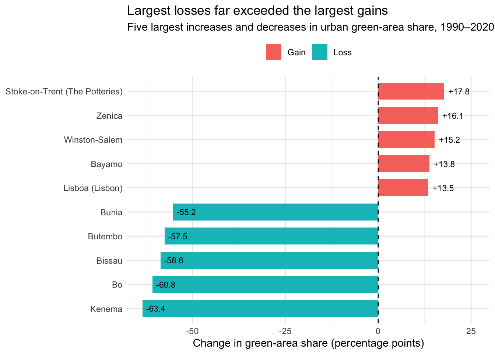

Homework 03
TidyTuesday Part (Optional)
You can count work on this week’s TidyTuesday toward the exceptional work.
Explore the week’s TidyTuesday challenge. Develop a research question, then answer it through a short data story mainly composed of effective visualizations. Provide sufficient background for readers to grasp your narrative. Refer to the Homework Instructions ⭐ page on the course website for details on how to submit this part.
Code
Rows: 5,600
Columns: 10
$ countryOrTerritoryName <chr> "Afghanistan", "Afghanistan"…
$ cityCode <chr> "AF_JALALABAD", "AF_JALALABA…
$ cityName <chr> "Jalālābād", "Jalālābād", "J…
$ sdgSubRegion <chr> "Southern Asia", "Southern A…
$ sdgRegion <chr> "Central Asia and Southern A…
$ dataSource <chr> "UN-Habitat Urban Indicators…
$ footNote <chr> "Data on green areas per cit…
$ year <dbl> 1990, 2000, 2010, 2020, 2025…
$ averageShareOfGreenAreaInCityUrbanAreaPct <dbl> 8.3518726, 8.7514702, 8.6707…
$ greenAreaPerCapitaM2 <dbl> 7.784019, 7.803632, 8.163923… [1] "countryOrTerritoryName"
[2] "cityCode"
[3] "cityName"
[4] "sdgSubRegion"
[5] "sdgRegion"
[6] "dataSource"
[7] "footNote"
[8] "year"
[9] "averageShareOfGreenAreaInCityUrbanAreaPct"
[10] "greenAreaPerCapitaM2" [1] 5600# A tibble: 5 × 2
year n
<dbl> <int>
1 1990 1120
2 2000 1120
3 2010 1120
4 2020 1120
5 2025 1120# A tibble: 1 × 1
number_of_cities
<int>
1 1113Code
# A tibble: 1 × 2
missing_green_share missing_green_per_capita
<int> <int>
1 975 976Background info: This TidyTuesday dataset contains information on urban green areas across cities in different countries and regions. One of the main measures is the average share of green area within a city’s urban area, reported for several years between 1990 and 2025. By comparing the same cities over time, we can examine how their green-area share has changed rather than only looking at which cities have the highest values in a single year.
Research question: Which cities gained or lost the most green-area share between 1990 and 2020?
Code
# A tibble: 2 × 4
year total available missing
<dbl> <int> <int> <int>
1 1990 1120 1120 0
2 2020 1120 1120 0Code
# A tibble: 6 × 5
cityName countryOrTerritoryName sdgRegion share_1990 share_2020
<chr> <chr> <chr> <dbl> <dbl>
1 Jalālābād Afghanistan Central Asia … 8.35 11.1
2 Herat Afghanistan Central Asia … 8.19 3.19
3 Kandahar Afghanistan Central Asia … 2.88 0.769
4 Kabul Afghanistan Central Asia … 5.30 2.85
5 Elbasan (Elbasani) Albania Northern Amer… 8.48 17.1
6 Tiranë (Tirana) Albania Northern Amer… 8.15 10.1 Code
Min. 1st Qu. Median Mean 3rd Qu. Max.
-63.447 -6.793 -1.706 -4.620 1.056 17.789 Code
# A tibble: 12 × 4
sdgRegion cities median_change mean_change
<chr> <int> <dbl> <dbl>
1 Oceania excluding Australia and New Zealand 2 -15.2 -15.2
2 Eastern and South-eastern Asia 1 -10.9 -10.9
3 Eastern Asia and South-eastern Asia 101 -5.43 -10.6
4 Global Average 1 -4.63 -4.63
5 Central and Southern Asia 1 -4.60 -4.60
6 Latin America and the Caribbean 220 -3.83 -7.10
7 Western Asia and Northern Africa 1 -3.31 -3.31
8 Central Asia and Southern Asia 165 -2.38 -4.47
9 Sub-Saharan Africa 118 -2.01 -8.72
10 Australia and New Zealand 24 -1.78 -1.90
11 Western Asia and Northern Africa 172 -0.821 -3.34
12 Northern America and Europe 314 0.163 -0.329Code
# A tibble: 6 × 7
cityName countryOrTerritoryName sdgRegion region_n share_1990 share_2020
<chr> <chr> <chr> <int> <dbl> <dbl>
1 Lae Papua New Guinea Oceania … 2 44.9 21.2
2 Suva Fiji Oceania … 2 33.0 26.3
3 <NA> Central and Southern Asia Central … 1 12.2 7.56
4 <NA> Eastern and South-eastern A… Eastern … 1 24.9 14.0
5 <NA> Global Average Global A… 1 14.9 10.3
6 <NA> Western Asia and Northern A… Western … 1 8.61 5.29
# ℹ 1 more variable: change <dbl>Code
# A tibble: 8 × 4
sdgRegion cities median_change mean_change
<chr> <int> <dbl> <dbl>
1 Oceania excluding Australia and New Zealand 2 -15.2 -15.2
2 Eastern Asia and South-eastern Asia 101 -5.43 -10.6
3 Latin America and the Caribbean 219 -3.81 -7.10
4 Central Asia and Southern Asia 165 -2.38 -4.47
5 Sub-Saharan Africa 117 -1.97 -8.72
6 Australia and New Zealand 23 -1.66 -1.90
7 Western Asia and Northern Africa 172 -0.821 -3.34
8 Northern America and Europe 313 0.195 -0.329Code
# A tibble: 1 × 3
increased decreased unchanged
<int> <int> <int>
1 390 722 0Code
ggplot(green_change_clean, aes(x = change)) +
geom_histogram(binwidth = 2) +
geom_vline(xintercept = 0, linetype = "dashed") +
labs(title = "Green-area share declined in most cities", subtitle = "Change in urban green-area share from 1990 to 2020 across 1,112 cities",
x = "Change in green-area share (percentage points)", y = "Number of cities") +
theme_minimal()
Code
# A tibble: 1 × 5
total increased decreased unchanged median_change
<int> <int> <int> <int> <dbl>
1 1112 390 722 0 -1.67From 1990 to 2020, green-area share decreased in 722 of the 1,112 cities in the dataset, while 390 increased. The median city experienced a decline of about 1.7 percent. Most cities were close to zero, which shows relatively modest changes, but the distribution has a long negative tail. This suggests that a smaller number of cities experienced particularly large losses in green-area share.
Code
ggplot(green_change_clean, aes(x = change, y = fct_reorder(sdgRegion, change, .fun = median))) +
geom_boxplot(outlier.alpha = 0.3) +
geom_vline(xintercept = 0, linetype = "dashed") +
labs(title = "Green-area change differed across world regions", subtitle = "City-level changes from 1990 to 2020, with regions ordered by median change",
x = "Change in green-area share (percentage points)", y = NULL, caption = "Oceania excluding Australia and New Zealand contains only 2 cities.") +
theme_minimal()
Changes in green-area share also differed across world regions. Northern America and Europe had a median change close to zero, meaning that the typical city in this region experienced little net change between 1990 and 2020. In contrast, Eastern Asia and South-eastern Asia and Latin America and the Caribbean had more negative median changes. The wide distributions and large amount of outliers within several regions also show that cities in the same region are not always follow similar patterns. Therefore, regional averages or medians can hide variation among cities.
Code
# A tibble: 5 × 3
cityName countryOrTerritoryName change
<chr> <chr> <dbl>
1 Stoke-on-Trent (The Potteries) United Kingdom of Great Britain and Nor… 17.8
2 Zenica Bosnia and Herzegovina 16.1
3 Winston-Salem United States of America 15.2
4 Bayamo Cuba 13.8
5 Lisboa (Lisbon) Portugal 13.5# A tibble: 5 × 3
cityName countryOrTerritoryName change
<chr> <chr> <dbl>
1 Kenema Sierra Leone -63.4
2 Bo Sierra Leone -60.8
3 Bissau Guinea-Bissau -58.6
4 Butembo Democratic Republic of the Congo -57.5
5 Bunia Democratic Republic of the Congo -55.2Code
# A tibble: 5 × 5
cityName countryOrTerritoryName share_1990 share_2020 change
<chr> <chr> <dbl> <dbl> <dbl>
1 Kenema Sierra Leone 76.2 12.8 -63.4
2 Bo Sierra Leone 73.1 12.4 -60.8
3 Bissau Guinea-Bissau 71.7 13.1 -58.6
4 Butembo Democratic Republic of the Congo 73.2 15.7 -57.5
5 Bunia Democratic Republic of the Congo 76.6 21.4 -55.2Code
# A tibble: 5 × 5
cityName countryOrTerritoryName share_1990 share_2020 change
<chr> <chr> <dbl> <dbl> <dbl>
1 Stoke-on-Trent (The Potte… United Kingdom of Gre… 8.22 26.0 17.8
2 Zenica Bosnia and Herzegovina 3.97 20.1 16.1
3 Winston-Salem United States of Amer… 22.6 37.7 15.2
4 Bayamo Cuba 7.87 21.7 13.8
5 Lisboa (Lisbon) Portugal 10.6 24.0 13.5Code
# A tibble: 10 × 5
cityName countryOrTerritoryName change city_label direction
<chr> <chr> <dbl> <chr> <chr>
1 Kenema Sierra Leone -63.4 Kenema Loss
2 Bo Sierra Leone -60.8 Bo Loss
3 Bissau Guinea-Bissau -58.6 Bissau Loss
4 Butembo Democratic Republic o… -57.5 Butembo Loss
5 Bunia Democratic Republic o… -55.2 Bunia Loss
6 Stoke-on-Trent (The Potte… United Kingdom of Gre… 17.8 Stoke-on-… Gain
7 Zenica Bosnia and Herzegovina 16.1 Zenica Gain
8 Winston-Salem United States of Amer… 15.2 Winston-S… Gain
9 Bayamo Cuba 13.8 Bayamo Gain
10 Lisboa (Lisbon) Portugal 13.5 Lisboa (L… Gain Code
ggplot(extreme_cities,aes(x = change, y = fct_reorder(city_label, change), fill = direction)) +
geom_col(width = 0.7) +
geom_vline(xintercept = 0, linetype = "dashed") +
geom_text(aes(label = sprintf("%+.1f", change)), hjust = -0.2, size = 3) +
scale_x_continuous(expand = expansion(mult = c(0.05, 0.15))) +
labs(title = "Largest losses far exceeded the largest gains",
subtitle = "Five largest increases and decreases in urban green-area share, 1990–2020",
x = "Change in green-area share (percentage points)", y = NULL, fill = NULL) +
theme_minimal() +
theme(legend.position = "top")
The cities with the largest losses experienced much greater changes than those with the largest gains. Kenema and Bo in Sierra Leone lost about 63.4 and 60.8 percentage points of green-area share, respectively, while the largest increase was about 17.8 percentage points in Stoke-on-Trent. The largest decrease were concentrated in Sierra Leone and the Democratic Republic of the Congo, whereas the cities with the largest gains were spread across countries. These extreme cases explained the long negative tail seen in the overall distribution and show that the decline in green-area share was especially severe for a relatively small number of cities.
Conclusion
Overall, urban green-area share declined more often than it increased between 1990 and 2020. However, the changes were not evenly distributed either in regions or individual cities. Some regions had typical changes close to zero, while others showed larger declines, and a small number of cities experienced very large losses. Together, these results suggest that the overall downward pattern is driven by a combination of widespread moderate declines and much more severe losses in certain cities.